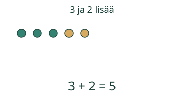
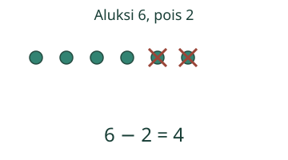
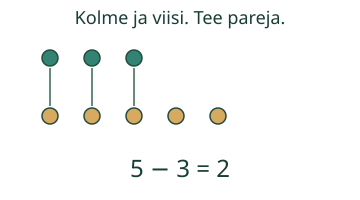
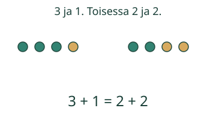

Kerro tilanne laskulauseella

Loikka näkee 3 marjaa ja 2 lisää. Yhdistä määrät ja katso, miten tilanteesta syntyy laskulause.
Mitä merkit kertovat yhdessä?




Osia voi laskea eri järjestyksessä ja ryhmitellä sulkuihin: (1 + 3) = (2 + 2). Miinuksessa alkuperäisen määrän ja pois otetun määrän vaihtaminen ei yleensä säilytä tulosta.
Mieti: Mistä laskulauseen luvut tulevat?
Katso perustelu
Plus yhdistää, miinus voi vähentää tai verrata. Merkki = kertoo, että koko sen vasen ja oikea puoli ovat yhtä paljon.
Lopuksi: Miksi 4 = 1 + 3 voi olla totta, vaikka lause alkaa nelosella?
Opettajalle ja ilman ruutua
Luokat 1–2. Integraationoodi tarvitsee kaikki kolme atomista merkkitaitoa M-SYM-PLUS, M-SYM-MINUS ja M-SYM-EQUAL. Niiden lisäksi ei aseteta uusia laskufluenssin portteja. Tavoite on yhdistää konkreettinen tilanne ja merkit ymmärrettäväksi yhteydeksi.
Kokoa pieniä nappijoukkoja. Näytä lisääminen, poistaminen ja kahden muuttumattoman joukon vertailu. Kirjoittakaa useita saman tilanteen oikeita laskulauseita ja vaihtakaa yhtäsuuruuden puolia. Lukemisen ja puhumisen voi korvata osoittamisella ja merkkipaloilla.
Tarkistin hyväksyy pienen, rajatun +/−/= ja sulkujen kirjoituskielen, oikeat ryhmittelyt sekä kuvattuun tilanteeseen liittyviä osien ja kokonaisen yhteyksiä. Pelkkä 5 = 5 voi olla totta, mutta se ei näytä 3 ja 2 osien yhteyttä. Kuvien mallit ja vihjeet ovat apua; itse kirjoitettu lause ei yksin todista koko integraation hallintaa, riippumatonta laskutaitoa tai muistamista. Ei henkilöhistoriaa. Pelisilta varmistetaan erikseen.